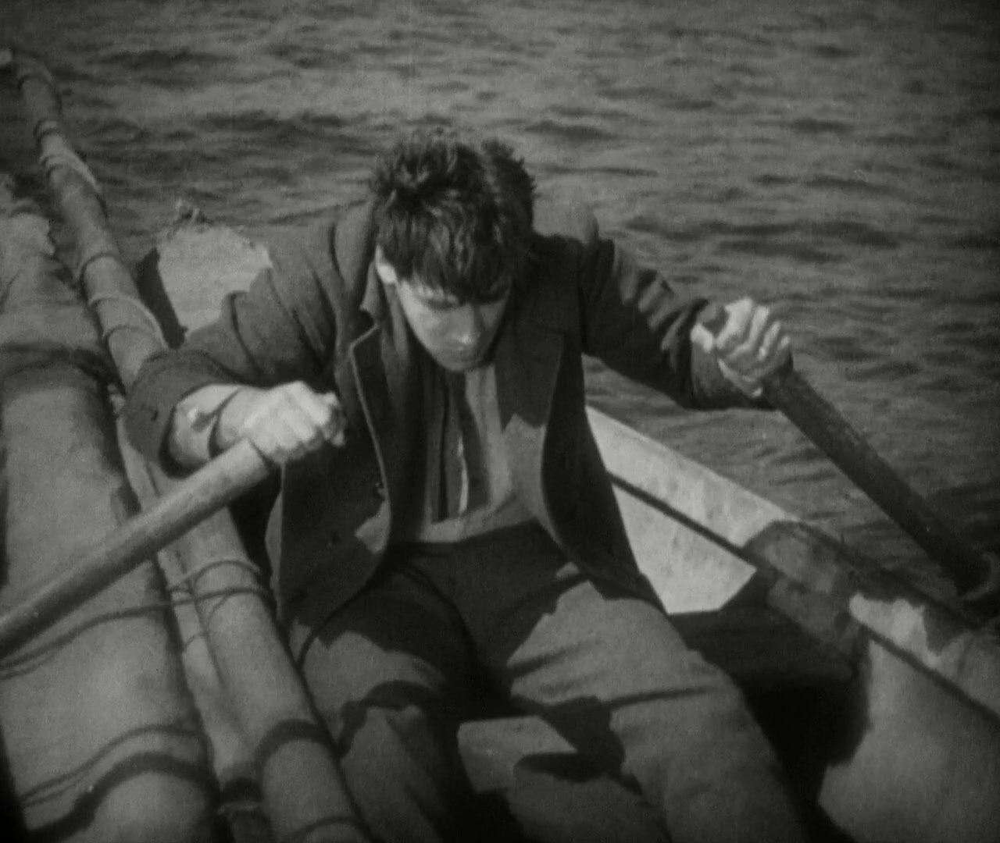

Sunrise: A Song of Two Humans, frame at 29:50
F. W. Murnau · 1927 · Film with recorded score, black and white (frame)
Free to use
William Fox invited F. W. Murnau from Germany to make the film, his first in America. Much of the outdoor shooting was done at Lake Arrowhead, California. Murnau chose the new Fox Movietone sound-on-film system, so the film was released with a recorded score and sound effects but no spoken dialogue.
Open in The ArtchiveFull-size file ↗